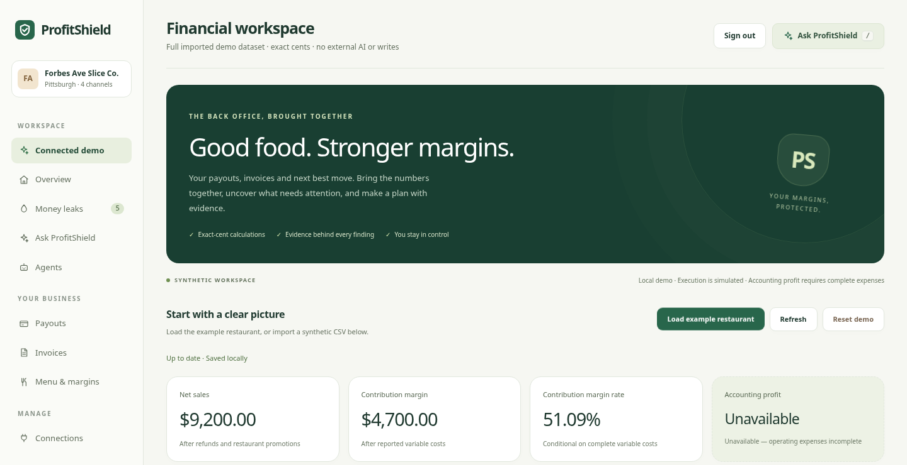

PROFITSHIELD / 01
Good food. Stronger margins.
ProfitShield · NOVA 2026 · DoorDash Back House
Restaurant financial intelligence
Import → Explain → Simulate → Review
Restaurant financial intelligence
Import → Explain → Simulate → Review
Delivery payouts: fees, promotions, refunds
POS sales: another view of revenue
Supplier invoices: price and document evidence
Less manual stitching. Clearer decisions.

Gross sales $10,000
Refunds $300; restaurant promotions $500
Net sales $9,200
Commissions $1,500; food $2,800; other variable costs $200
Contribution margin $4,700 · 51.09%
Accounting profit unavailable
$4,000 gross sales
20% supplied gross-sales commission rate
$900 charged versus $800 expected
$100 conditional exposure; review before claiming
Duplicate invoice document ≠ proven duplicate payment
Before $4,700.00 → after $5,127.50
Demand and quantities unchanged
Refunds/promotions fixed in dollars
No external platform price changed
Interpretation: optional privacy-gated AI in the historical path
Arithmetic: Python Decimal and integer cents
Approval: owner review, explicit confirmation, simulated result
Connected Guru is deterministic in this demonstration
Scattered records → financial understanding → reviewed next action
Next: a pilot workflow with reviewed contracts and complete costs
ProfitShield · Good food. Stronger margins.
Connected: CSV → prototype.py → financial_engine.py
Historical: imports → legacy_finance.py → financial_engine.py
SQLite; Python HTTP server; vanilla frontend
UI branch includes owner session and CSRF controls
Working: local imports, evidence, arithmetic, scenarios, state, drafts
Simulated: connected execution; deterministic Guru fallback
Optional: privacy-gated AI; separate Square sandbox review flow
Next: completeness, reconciliation, isolation, pilots